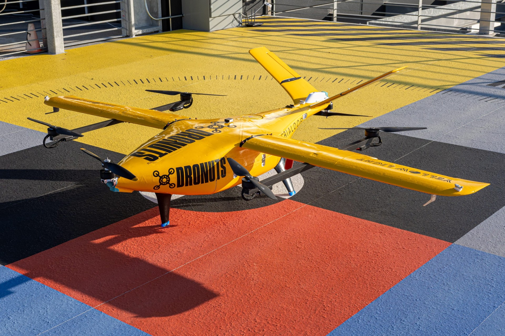
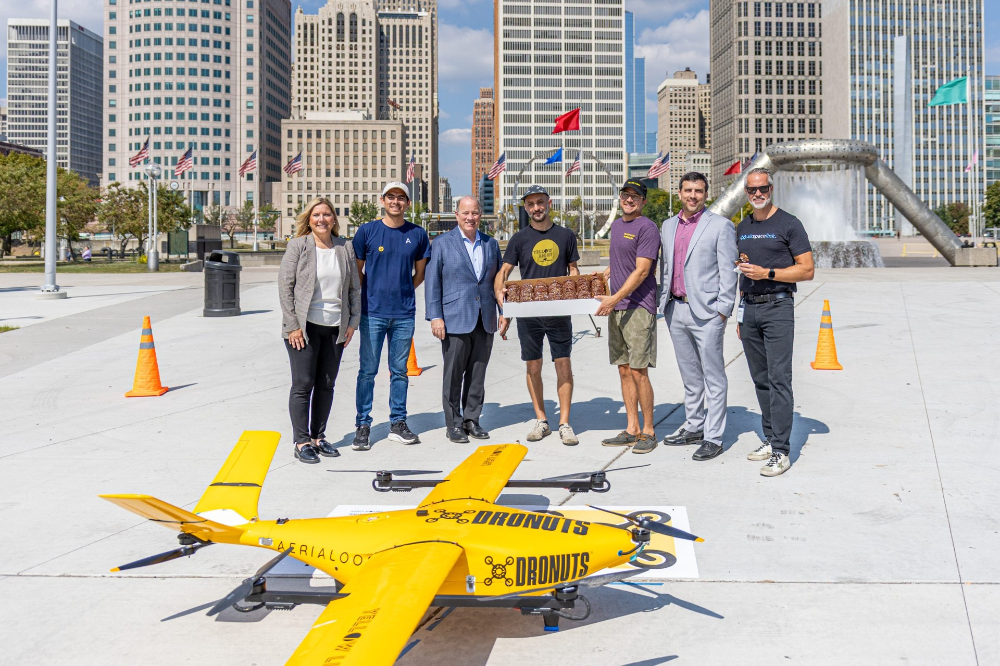

01どう動かしているのか。
Newlabの27万平方フィートの建物で常駐専門家が加工・設計を支援し、案件ごとの技術・戦略チームが企業・行政と実証を組む。道路実証は4平方マイルのTransportation Innovation Zone、空の実証は約28平方マイルのAAIRを利用し、自治体手続き、連邦航空当局の承認、空域調整を支援する。許可が一律に不要になる制度ではない。2025年発表のThe 23rdは、38万平方フィートの工業施設の一部をNewlab等が活用し、可変的な賃貸区画と製造・物流支援で初期生産へ接続する構想。2026年にはAAIRの規制調整、訓練、飛行経験を公開。住民には実証の情報を公開し、地域の人材が運用に参加する経路も設ける。
- 拠点で試作し買い手・利用現場を特定
- 市・州・連邦の必要な許認可を調整
- 道路・空域・港湾等で条件差を検証
- 地域の工場・供給網へ生産を接続
- 実証情報と人材機会を地域へ還元
02誰が負担し、誰が担うか。
Fordは地区構想に10億ドル超を投資すると公式説明。Newlabの会員利用、企業・行政とのプログラム、製造施設の賃貸等を組み合わせる。地区総投資とNewlab運営費・個別実証費の内訳は別で、詳細は未確認。
制度やプログラムの財源と、各参加企業・地域に発生する費用は同じではありません。公開範囲を超える案件別予算・契約条件は未確認です。
03確認できたこと。
Newlab Detroitは27万平方フィートで、常駐のProduct Realization専門家と試作設備を持つ。
読み取れる範囲：建物総面積と加工ラボ面積を区別する。
原典で確かめる ↗ 出典の説明 ↓2026年5月の公式発表はAAIR約28平方マイル、TIZ4平方マイル、空域・規制調整支援を説明する。
読み取れる範囲：実証可能区域であり、包括的な規制免除や全域の自由利用ではない。
原典で確かめる ↗ 出典の説明 ↓04日本で活かすなら。
本調査の分析：日本の駅周辺や産業地区で参考になるのは、中心建物に全機能を詰め込むことではなく、既存工場・道路・港湾・大学を案件単位で接続する運営である。中心拠点は相談、仕様設計、試作、契約調整を担い、大型・危険・専門工程は適切な外部施設へ出す。自治体は必要書類、審査担当、現場条件を予め示し、実証情報を住民へ公開する。実証の成功条件に、地域で製造・保守できること、地域人材が仕事を得られること、苦情や事故の窓口が明確なことを加える。地域への効果は企業誘致数だけでなく、地元への発注と継続雇用で測る必要がある。
05そのまま真似できないこと。
Fordの大規模資本投入、歴史建築、製造業の人材・供給網という条件は他地域で容易に再現できない。2026年には外部専門家による経済効果報告が存在するが、乗数を用いた波及推計と反実仮想に基づく因果評価は別である。地価上昇や既存住民への負担、地域内で誰に所得が配分されたか、個別サービスの採算は別途確認が必要。Newlab全体、Detroit拠点、Michigan Central地区の企業数・資金・効果を合算して重複計上してはいけない。
06次に、何を確かめるか。
提案・未実施：地域の運営主体が90日で大学工房・製造工場・道路管理者の3ノードを接続し、1案件を入口相談から現場試験まで進める。調整日数、再提出、契約費、地域発注額、住民への説明と苦情対応を記録する。外部接続が自前保有より総費用・期間を改善した場合だけ対象ノードを増やす。
07現場を、写真と動画で。

PHOTO: Stephanie Rhoades Hume / Michigan Central · 掲載元 ↗ · Official Media Toolkit permission: official assets for projects ↗ · 縮小・表示枠に合わせた切り抜き。色変更なし。

PHOTO: Stephanie Rhoades Hume / Michigan Central · 掲載元 ↗ · Official Media Toolkit permission: official assets for projects ↗ · 縮小・表示枠に合わせた切り抜き。色変更なし。
冒頭写真：Michigan Central OPEN開催時、Roosevelt Park側から撮影した駅舎。Newlab施設内部ではない。
公式サイトで、写真・最新の活動を見る ↗08原典を読む。
The Next Frontier of Transportation Won’t be Built on the Coasts, It Will be Built in Detroit ↗
AAIR28平方マイル、TIZ4平方マイル、規制支援と人材訓練
Building the Future of Manufacturing in Detroit: Newlab Launches The 23rd ↗
初期生産を支える外部施設との接続、規模・設備・柔軟な区画
2026年の報告公開と2025年経済波及推計の範囲